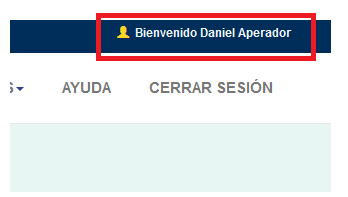

La aplicación utiliza los servicios de Google para autenticación de los usuarios, esto quiere decir que todas personas que se registren en el sistema deben tener un correo de Gmail.
A través de la opción en el menú “Gestión Usuarios”, se accede a la pantalla para el registro, actualización y eliminación usuarios (solo los usuarios creados como "Administrador" tiene acceso a éste menú)
Para el ingreso de un nuevo usuario se registra: el nombre de la persona, el email (recordar que debe ser de Gmail), una descripción, si se selecciona la opción "Administrador" el nuevo usuario tendrá la posibilidad de crear, editar y eliminar usuarios, de lo contrario la opción "Gestón usuarios" no apareceraá en su menú. A continuación botón “Guardar”.
Para actualizar la información de un usuario éste debe seleccionarse de la sección "Usuarios registrados"
Se realizan los cambios pertinentes y se selecciona el botón "Actualizar usuario"
Para eliminar un usuario éste debe seleccionarse de la sección "Usuarios registrados"
Cuando el nuevo usuario ya está registrado en el sistema puede éste acceder a la aplicación a través del botón “acceder” ubicado en la parte superior de la pantalla:
A continuación se presentara la siguiente pantalla con las cuentas de gmail que han sido usadas en el navegador, seleccionar la cuenta con la cual se registró al usuario en la aplicación, si no aparece en la lista se usa la opción “usar otra cuenta” y se ingresan las credenciales correspondientes:
Cuando el usuario se ha autenticado satisfactoriamente en la parte superior de la pantalla se observa el siguiente mensaje de bienvenida:
